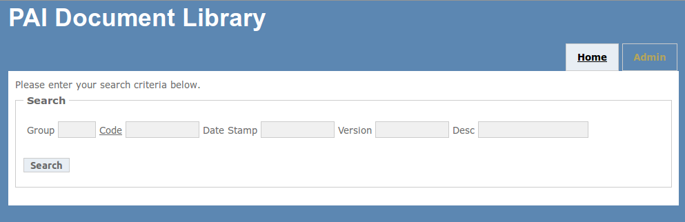
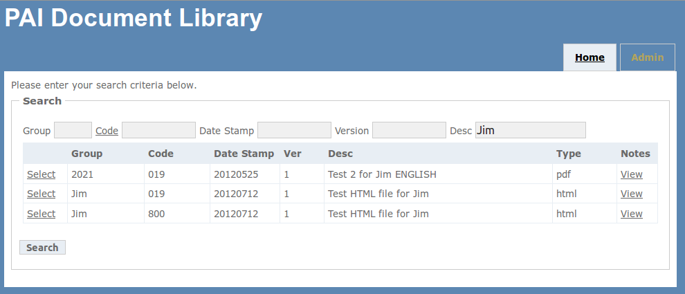
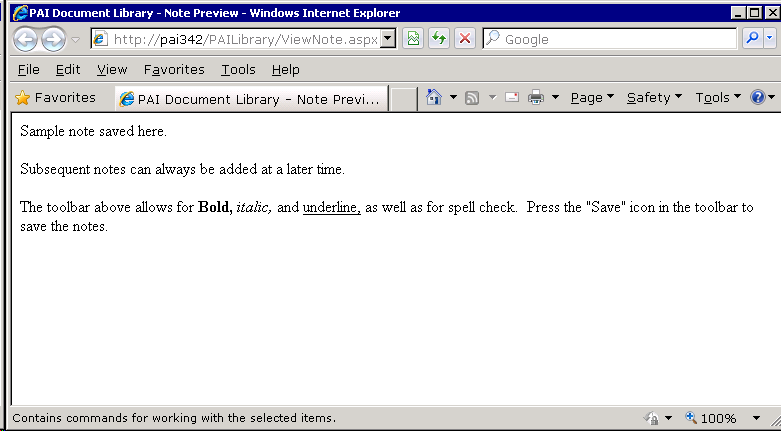
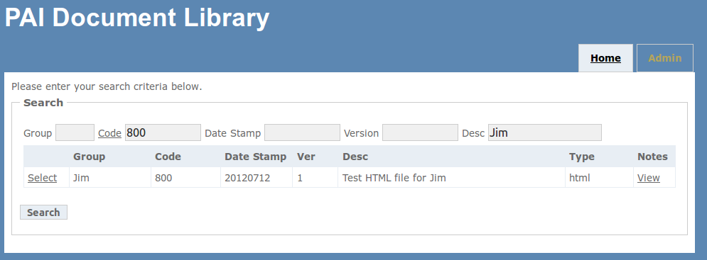
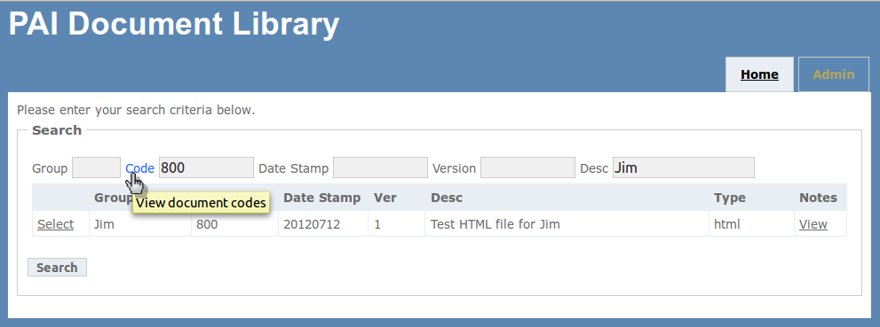
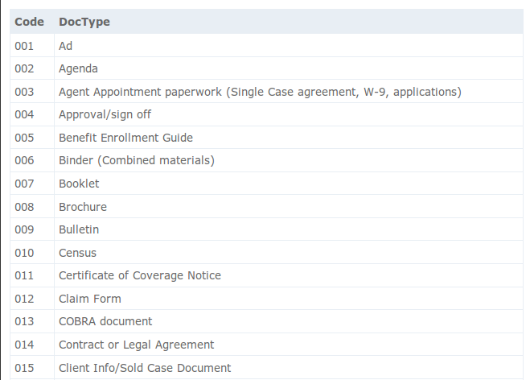

To locate documents in the library, just enter any search criteria into the corresponding input box and click Search.
The result list will contain a “Select” link and, if present, a “View” link for notes. Selecting the "Select" link for a
document will open the document for you to preview and the "View" link will open the notes in a popup window.


You can enter multiple search criteria to further limit your results. The description field will do a fuzzy search (your
input in any part of the description) for the text you enter.

If you cannot remember a document code, you can click on the Code link which will pop-up a window with all the
current valid document codes.

